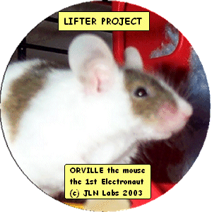

Lifter Challenges
created on October
10th, 2001 - JLN Labs - Last
update March 21, 2003
Toutes les informations et schémas sont publiés
gratuitement ( freeware ) et sont destinés à un usage personnel
et non commercial
All informations and
diagrams are published freely (freeware) and are intended for a private use and a non commercial
use.

January 8th, 2003 : The 1st Electronaut FLIGHTReturn to the Lifter project home page